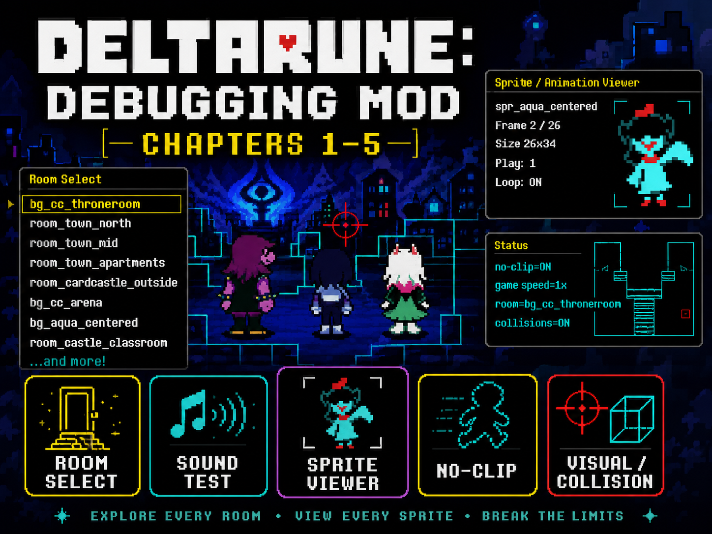

v1Chapters 1–5UMT CSX
DELTARUNE Debugging Mod
Custom fan-made debug menu for DELTARUNE with a better room selector, sprite viewer, sound test, visual/collision tools, no-clip, runtime info, object browser, and safe battle/test-room tools.
 DDM Menu1
DDM Menu1 DDM Menu2
DDM Menu2 DDM Menu3
DDM Menu3 DDM Menu4
DDM Menu4 DDM Menu5
DDM Menu5 DDM Menu6
DDM Menu6 DDM Menu7
DDM Menu7 DDM Menu8
DDM Menu8 DDM Menu9
DDM Menu9 Spr 1
Spr 1 Spr 2
Spr 2 Vis Act1
Vis Act1 Vis Act2
Vis Act2 Vis Act3
Vis Act3 Vis Act5
Vis Act5